friends, i'm sorry for the delay in posting. it will happen again. went on a trip to havelock island the past week in the andamans, a group of islands in the bay of bengal
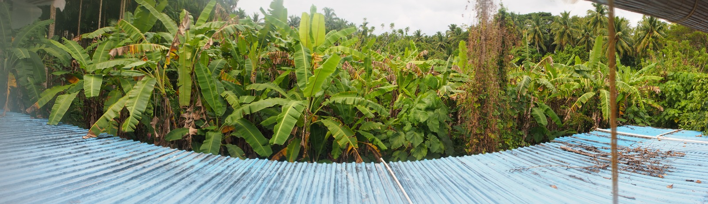
i was crashing my cousin's family new years vacation, and by the time i decided to do this there was no room at their resort hotel. after accidentally falling for a fake listing on the scam website "agoda", i was without a place to stay a day before the trip on a sold out island. i contacted many places on the island and found only one option- the "coastal shed"- an unlisted, delightful, cheap homestay that i booked through whatsapp. here's the view from the balcony
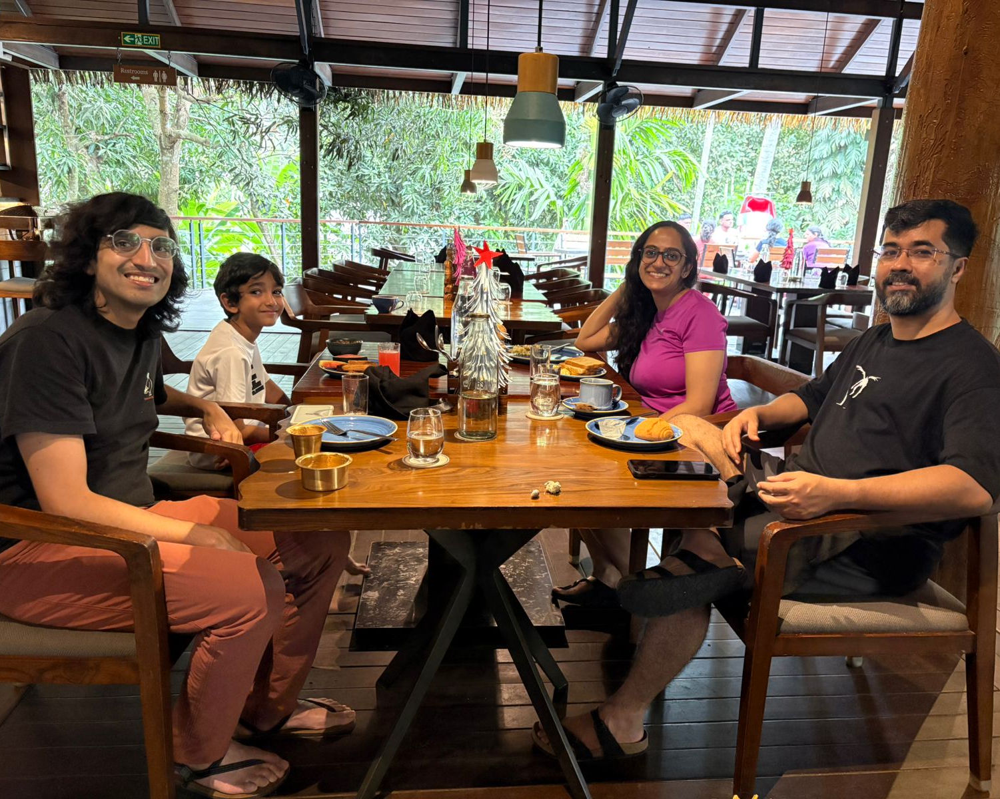
i still ate most of my meals at the resort restaurant, which was great.
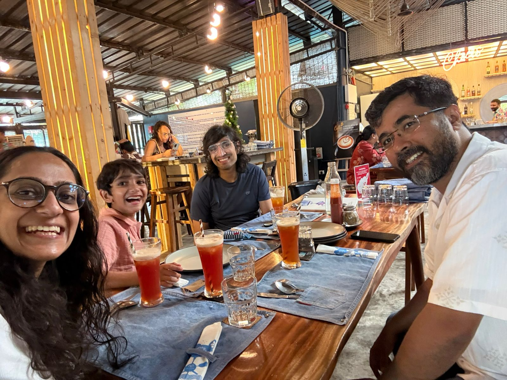
we did a lot of eating. our favorite restaurant was "something different"
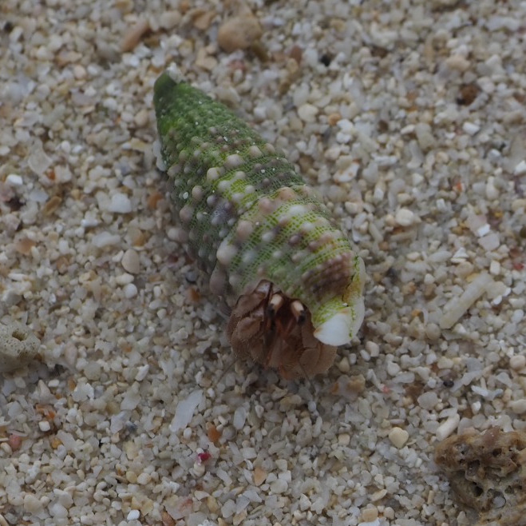
here's one of the many hermit crabs along the beach. this one has a particuarly cool house
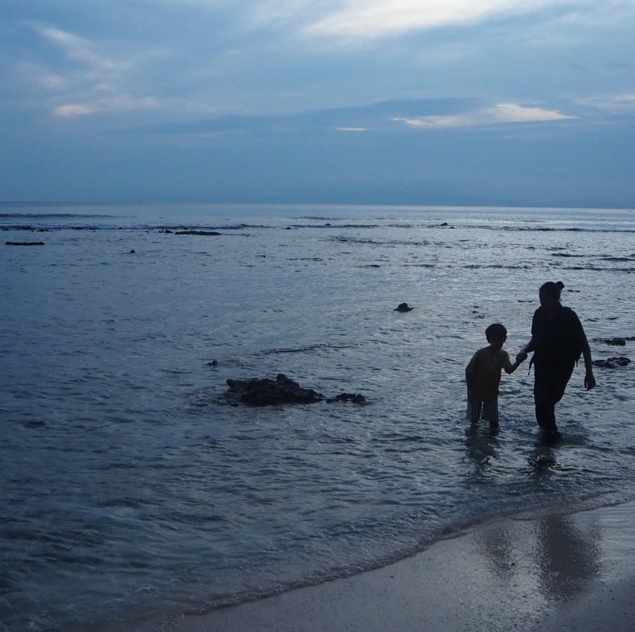
Lakshmi, who worked at the resort, is about to move to Australia to start her Marine Biology PhD. She led us on intertidal walks
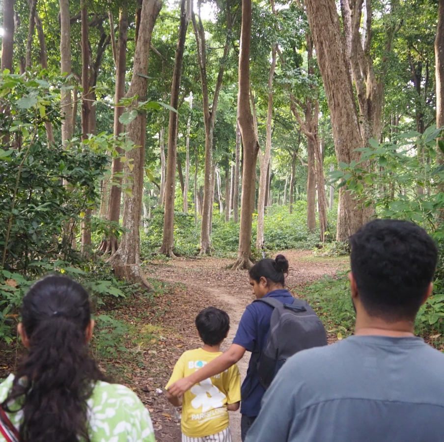
and a walk through the forest to a 'secret' beach
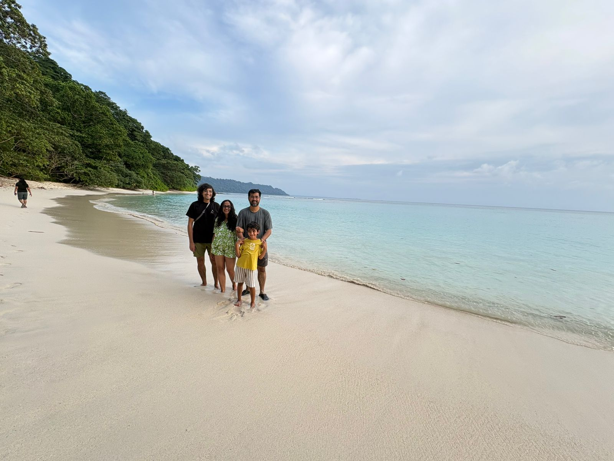
(actually connected to the crowded beaches, but nobody else was there)
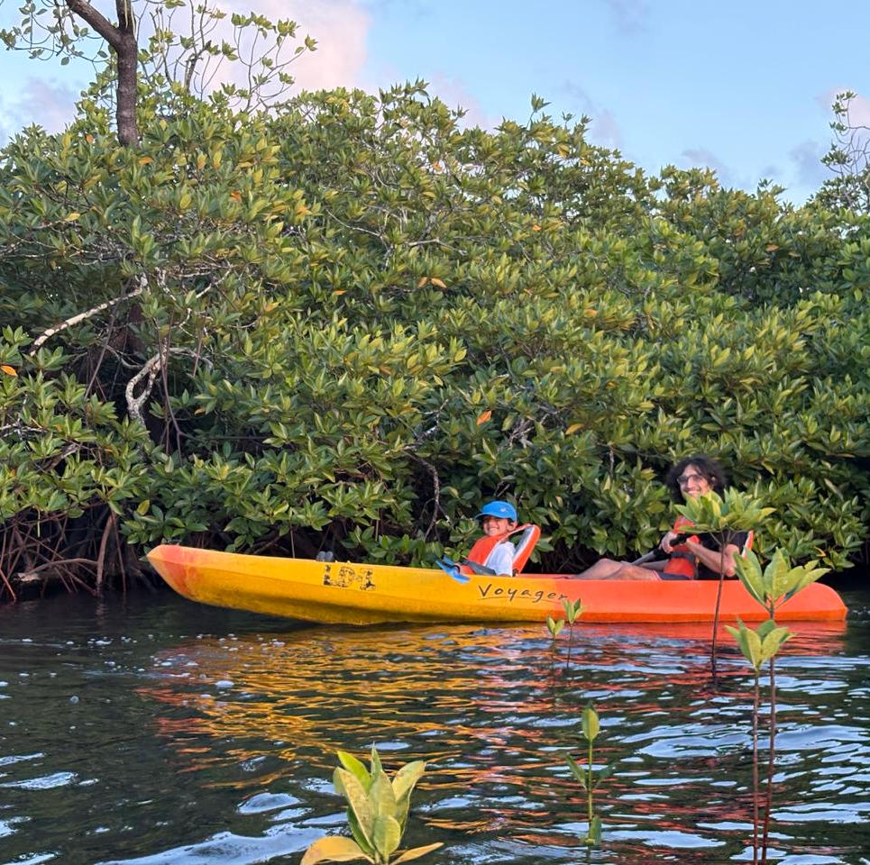
kayaking!
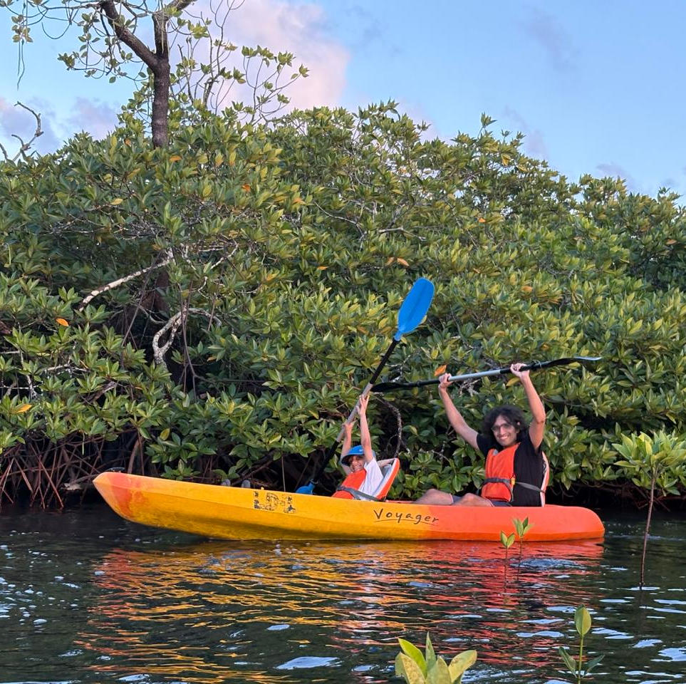
Samit was the captain and would yell that the boat needed to go "there!" (without specifying an actual direction) and i'd paddle away and say "aye aye captain". also he'd sing "row row row your boat"
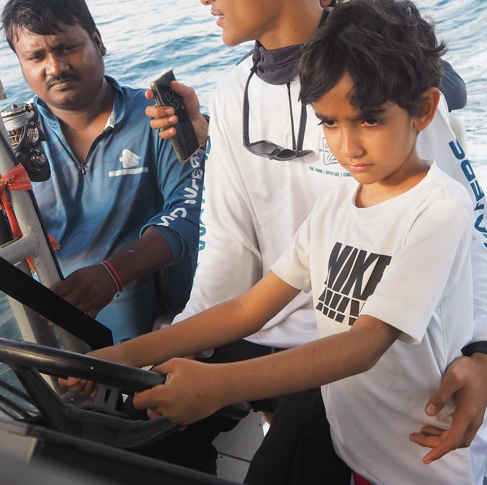
on the 31st we woke up at 4am to take a trip to barren island. a propeller stopped working an hour into the journey and we had to turn around. they let Samit drive the boat in circles on the way back, giving some false hope to passengers who hadn't noticed the change in captain when he turned the boat back towards our original destination
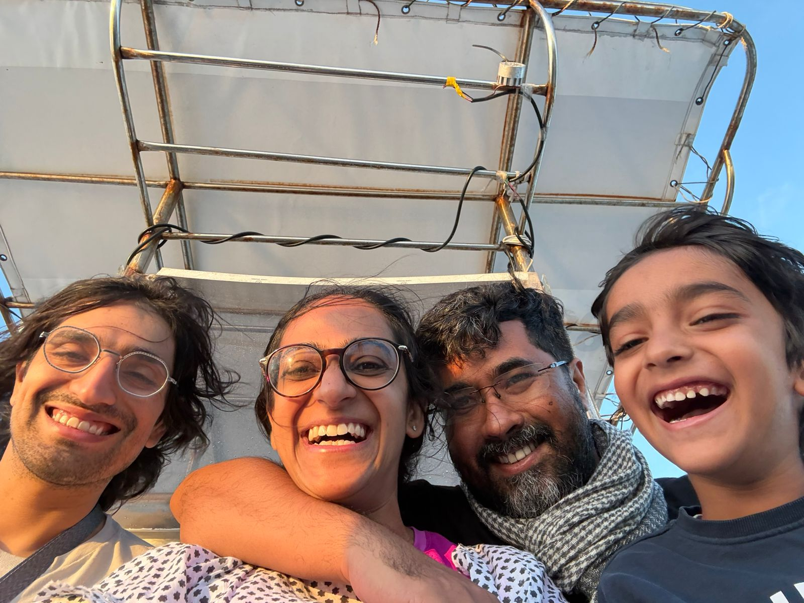
on new years, we were up even earlier on a new boat with the same crew in a second attempt to visit barren, because we had a ferry out of havelock in the afternoon and still wanted to do this trip. we did get a great view of the stars thanks to the quick start. we saw the island, we snorkeled and saw lots of fishes and some sad coral.
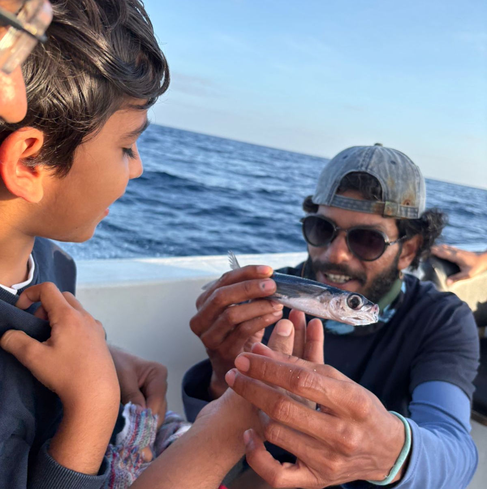
on the boat ride over, we saw some flying fish and one of them hit Vinay in the head as the boat was speeding by, ending up on the deck.
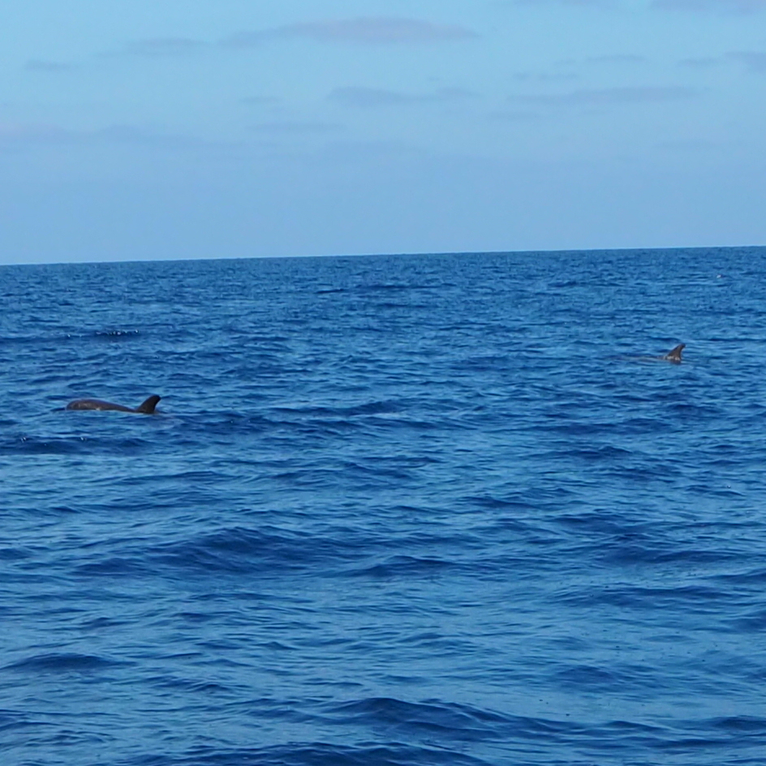
on the way back, we saw a pod of dolphins! i have a few photos that look like this if you zoom in, but none of them jumping out of the water.
i'm in goa, now, and i had so little time the past days that i booked the place i'm staying while at my layover. i'm staying in siolim, and when i handed the taxi driver the receipt at the airport with the location he recited it as a single word joke to every other driver he passed on the way to his car "siolim! hahaha! siolim!" and somewhere into the hour and a half of gridlocked traffic i understood what he meant